Muscle BioAmp Blip#
Ringkasan#
Muscle BioAmp Blip [1] adalah sensor Elektromiografi (EMG) saluran tunggal yang kompatibel dengan mikroBUS™ [2] untuk perekaman sinyal otot yang presisi. Ini memungkinkan Anda untuk menambahkan fungsi EMG ke proyek Anda dengan mudah. Anda dapat menghubungkannya ke port mikroBUS™ apa pun atau bahkan breadboard untuk memulai.
{kind=link}
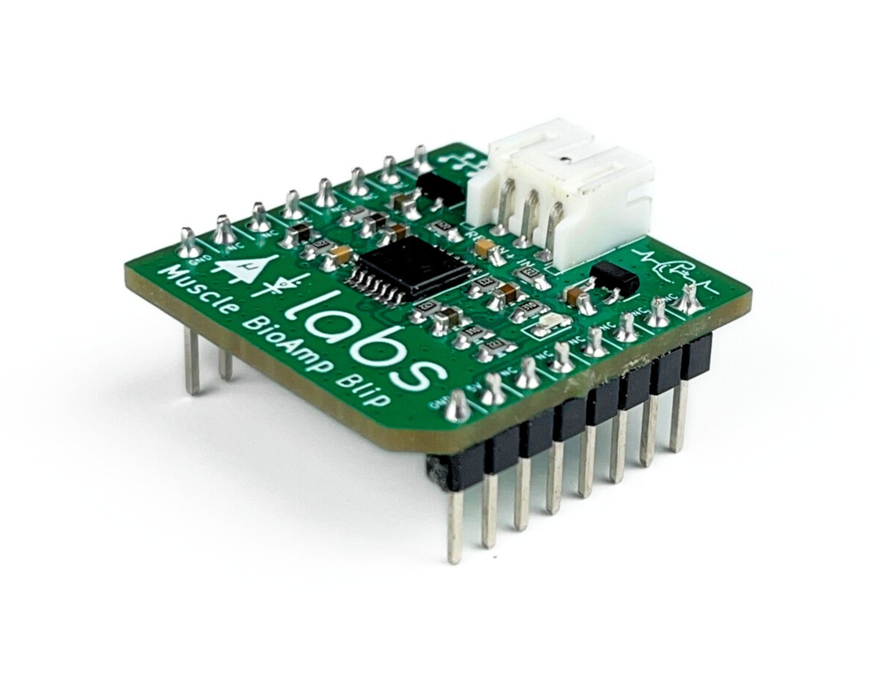
Fitur & Spesifikasi#
Perangkat Keras#
Gambar di bawah menunjukkan gambaran cepat desain perangkat keras.
{kind=link}
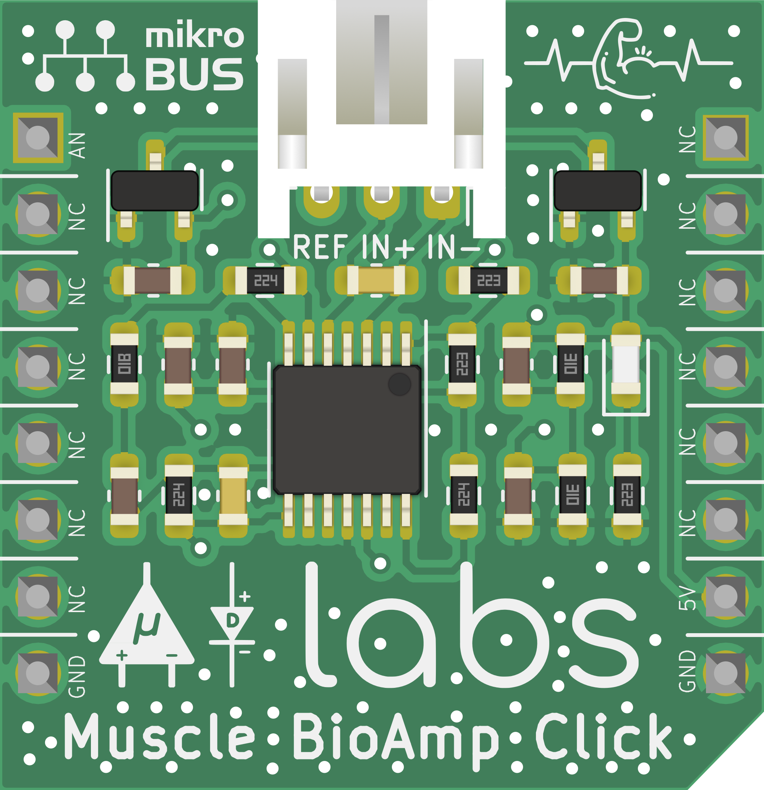
PCB Dirakit#
Isi kit#
Isi kit |
Qty |
|---|---|
Muscle BioAmp Blip |
1 |
BioAmp Cable v3 |
1 |
Muscle BioAmp Band |
1 |
Boxy gel electrodes |
6 |
{kind=link}
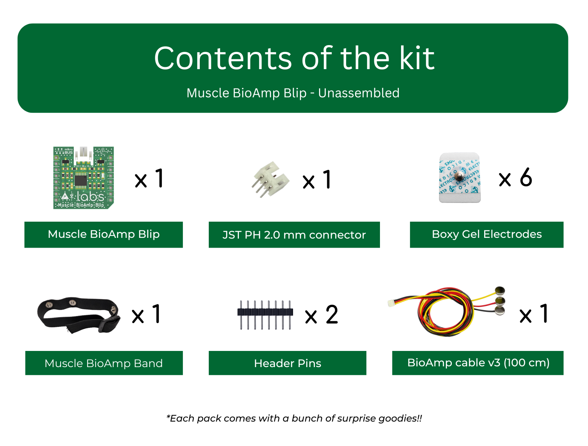
Persyaratan perangkat lunak#
Sebelum Anda mulai menggunakan kit, silakan unduh Arduino IDE v1.8.19 (legacy IDE). Dengan menggunakan ini Anda akan dapat mengunggah sketsa arduino di papan pengembangan Anda dan memvisualisasikan data di laptop Anda.
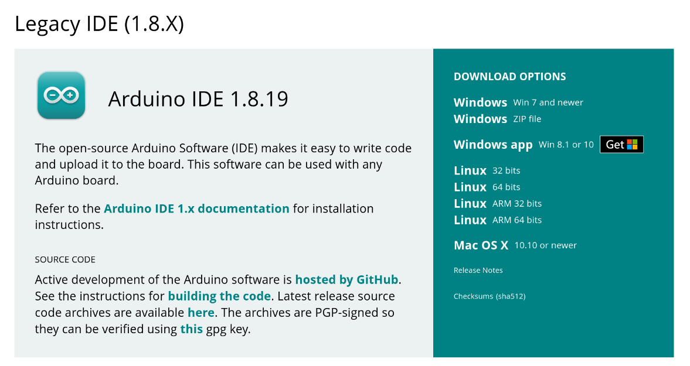
Arduino IDE v1.8.19 (legacy IDE)#
Kunjungi Upside Down Labs Chords Web untuk memvisualisasikan sinyal bio-potensial Anda langsung di browser.

Halaman Arahan Chords Web#
Memulai dengan Chords Web
Menggunakan kit#
Langkah 1: Menyolder konektor & pin header#
Solder pin header dan konektor JST Ph 2.0mm pada Muscle BioAmp Blip seperti yang ditunjukkan di bawah. Jika Anda memesan kit dirakit maka Anda dapat melewati langkah ini dan langsung ke langkah 2.
{kind=link}
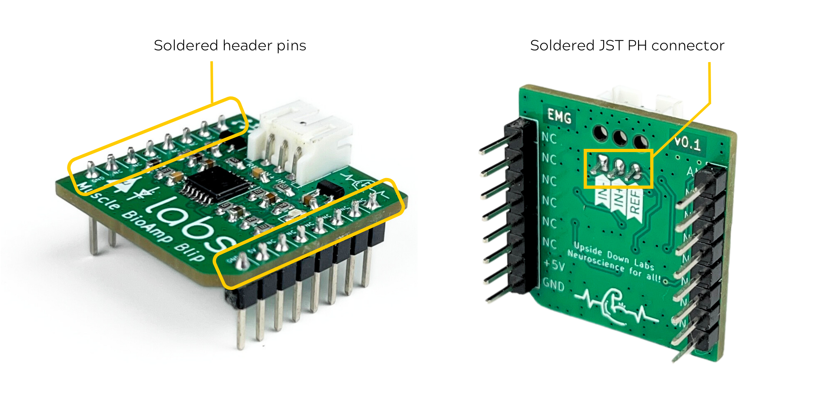
Langkah 2: Koneksi dengan sensor#
Ada berbagai cara menghubungkan Muscle BioAmp Blip. Beberapa opsi diberikan di bawah:
Menghubungkan kabel jumper langsung#
Anda dapat langsung menghubungkan kabel jumper jantan ke betina pada pin header Muscle BioAmp Blip di 5V, GND, AN.
{kind=link}
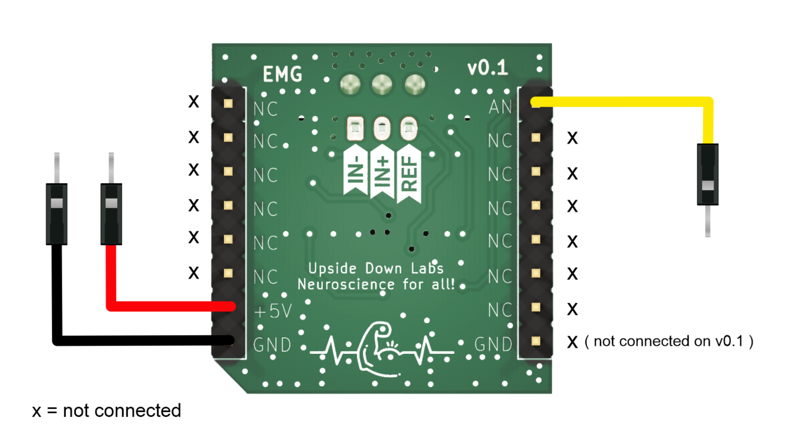
Menghubungkan pada breadboard#
Jika Anda berpikir untuk menghubungkan lebih banyak komponen/sensor dan ingin mengintegrasikan Muscle BioAmp Blip dalam sirkuit lengkap maka akan lebih baik menggunakan breadboard. Pasangkan Muscle BioAmp Blip pada breadboard dan hubungkan kabel jumper (jantan ke jantan) di 5V, GND, AN.
{kind=link}
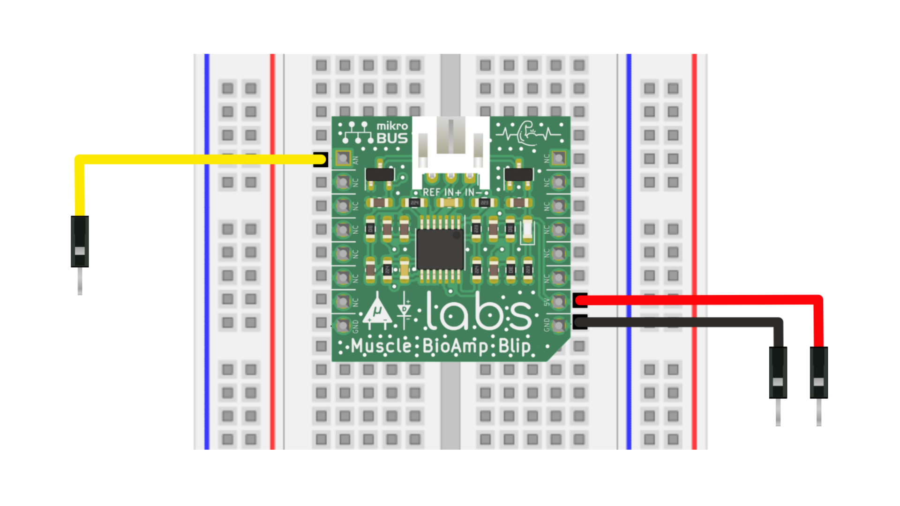
Menghubungkan melalui port mikroBUS#
Anda juga dapat menghubungkan Muscle BioAmp Blip ke perangkat keras apa pun yang memiliki port mikroBUS™ seperti mikroBUS™ shuttle, mikroBUS™ Arduino UNO Click Shield untuk beberapa nama.
{kind=link}
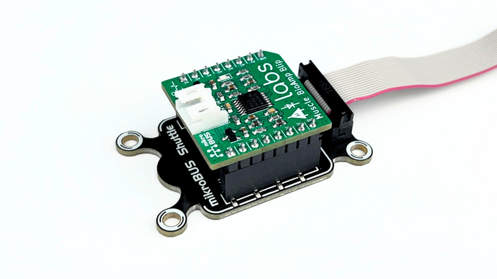
Langkah 3: Menghubungkan dengan Arduino UNO R3#
Hubungkan 5V sensor ke 5V Arduino UNO Anda, GND ke GND, dan AN ke Analog pin A0 melalui ujung lain kabel jumper. Jika Anda menghubungkan AN ke pin analog lain, maka Anda harus mengubah INPUT PIN dalam sketsa arduino contoh sesuai.
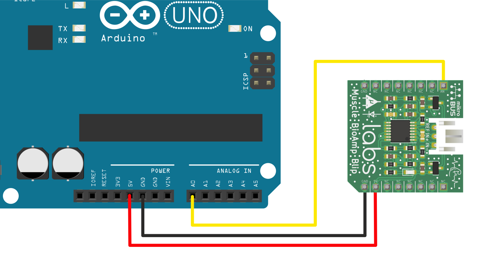
Note
Untuk tujuan demonstrasi kami menunjukkan koneksi sensor dengan Arduino UNO R3 tetapi Anda dapat menggunakan papan pengembangan lain atau ADC mandiri pilihan Anda.
Langkah 4: Menghubungkan kabel elektroda#
Hubungkan kabel BioAmp ke Muscle BioAmp Blip dengan memasukkan ujung kabel di konektor JST PH seperti yang ditunjukkan.
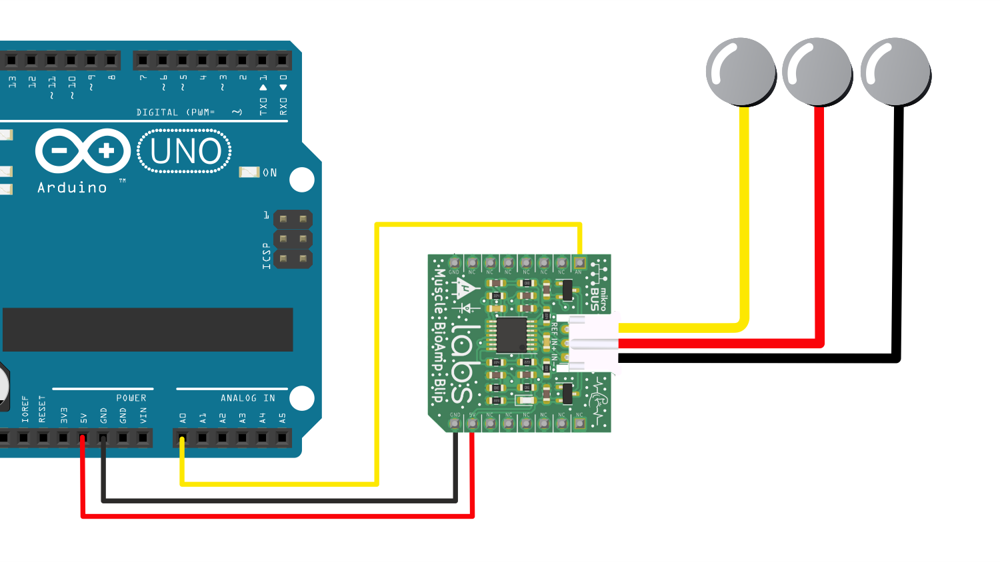
Langkah 5: Persiapan Kulit#
Oleskan Gel Persiapan Kulit Nuprep pada permukaan kulit tempat elektroda akan ditempatkan untuk menghilangkan sel kulit mati dan membersihkan kulit dari kotoran. Setelah menggosok permukaan kulit secara menyeluruh, bersihkan dengan tisu alkohol atau tisu basah.
Untuk informasi lebih lanjut, silakan lihat langkah-langkah detail Panduan Persiapan Kulit.
Langkah 6: Penempatan elektroda#
Kami memiliki 2 opsi untuk mengukur sinyal EMG, baik menggunakan elektroda gel atau menggunakan Band BioAmp Otot berbasis elektroda kering. Anda dapat mencoba keduanya satu per satu.
Menggunakan elektroda gel#
Hubungkan kabel BioAmp ke elektroda gel,
Kupas backing plastik dari elektroda
Tempatkan kabel IN+ dan IN- di lengan dekat saraf ulnar & REF (referensi) di bagian belakang tangan Anda seperti yang ditunjukkan di diagram koneksi.
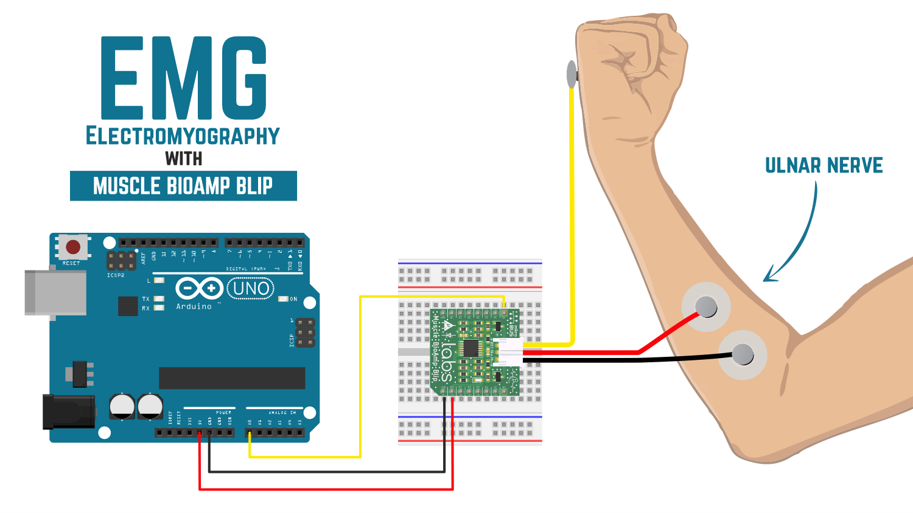
Muscle BioAmp Blip dengan breadboard#
Menggunakan Band BioAmp Otot#
Hubungkan kabel BioAmp ke Band BioAmp Otot dengan cara sehingga IN+ dan IN- ditempatkan di lengan dekat saraf ulnar & REF (referensi) di sisi jauh band.
Sekarang letakkan tetesan kecil gel elektroda antara kulit dan bagian logam kabel BioAmp untuk mendapatkan hasil terbaik.
Tip
Kunjungi dokumentasi lengkap tentang cara merakit dan menggunakan Band BioAmp atau ikuti video youtube yang diberikan di bawah. Tutorial tentang cara menggunakan band:
Note
Dalam demonstrasi ini kami merekam sinyal EMG dari saraf ulnar, tetapi Anda dapat merekam EMG dari area lain juga (bisep, trisep, kaki, rahang dll) sesuai kebutuhan proyek Anda. Pastikan untuk menempatkan elektroda IN+, IN- pada otot yang ditargetkan dan REF pada bagian tulang.
Langkah 7: Mengunggah kode#
Hubungkan Arduino UNO R3 Anda ke laptop menggunakan kabel USB (Tipe A ke Tipe B). Salin tempel salah satu sketsa arduino yang diberikan di bawah di Arduino IDE v1.8.19 yang Anda unduh sebelumnya:
Pergi ke tools dari menu bar, pilih opsi board lalu pilih Arduino UNO. Di menu yang sama,
pilih port COM tempat Arduino Uno Anda terhubung. Untuk mengetahui port COM yang benar,
putuskan sambungan papan Anda dan buka kembali menu. Entri yang menghilang harus
port COM yang benar. Sekarang unggah kode, & buka serial plotter dari menu tools untuk memvisualisasikan
sinyal EMG.
Setelah membuka serial plotter pastikan untuk memilih baud rate ke 115200.
Warning
Pastikan laptop Anda tidak terhubung ke charger dan duduk 5m jauh dari peralatan AC apa pun untuk akuisisi sinyal terbaik.
Langkah 8: Memvisualisasikan sinyal EMG#
Untuk memvisualisasikan sinyal EMG, gunakan Chords Web untuk visualisasi sinyal bio-potensial real-time yang cepat dan tanpa masalah langsung dari browser Anda, tanpa menginstal perangkat lunak apa pun.

Memvisualisasikan sinyal EMG di Chords Web#
Sekarang tekuk lengan Anda untuk memvisualisasikan sinyal otot secara real-time di laptop Anda.
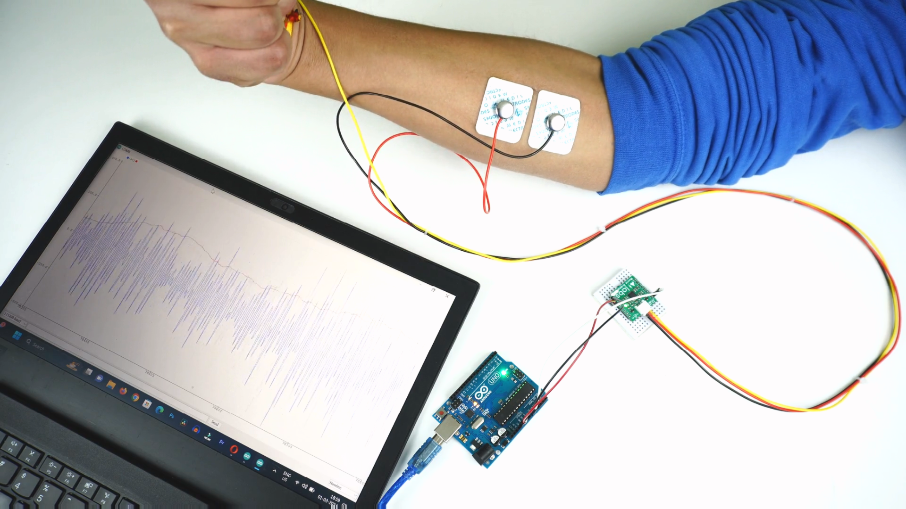
Memvisualisasikan sinyal EMG di Arduino IDE v1.8.x#
Catatan Kaki